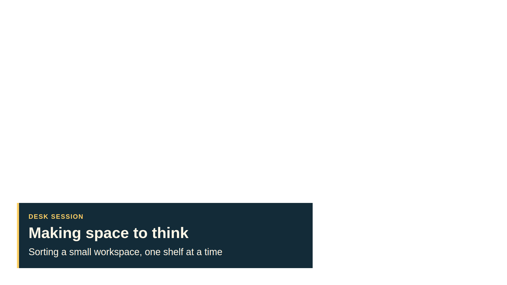

01 · Add a local source
50 seconds · local-file setup, source dimensions and refreshing edits
Download tutorial 01FREE SAMPLE · 1920 × 1080 · MIT LICENCE
A topic lower third for tutorials, coding sessions and making projects. Download one HTML file, add it to OBS as a local Browser Source, and keep your words close to the work.
Download the free sample ZIPJust the HTML fileNo purchase or sign-in. Static text, local system fonts, no scripts in the overlay. The ZIP includes the HTML, setup notes and MIT licence.

lower-third-1080p.html in a permanent folder.To change the sample's words, open the HTML in a plain text editor. Edit the text inside the eyebrow, heading and subtitle tags; keep the tags intact. Read the complete sample notes for escaping special characters and matching a smaller canvas.
Silent, captioned videos. The first and third include actual OBS output. The second demonstrates the full pack's offline editor; that editor is not included in this single-file free sample.
50 seconds · local-file setup, source dimensions and refreshing edits
Download tutorial 01About 44 seconds · full-pack editor demonstration: words, contrast, saved JSON and HTML export
Download tutorial 0252 seconds · native dimensions, preview scaling and testing your saved recording
Download tutorial 03The sample rendered in OBS 32.2.2 with Browser Source on Linux. Our software-rendered test host missed its 30 FPS target. No frame-rate or low-CPU guarantee is established. Try it on your own streaming machine and inspect OBS Stats and a local recording. Windows/macOS and real viewer readability have not been tested.
One ready-to-use 1080p topic lower third, setup notes and an MIT licence. It has no automatic alerts, chat/follower data, countdown, music or webcam frame. The full local pack adds an offline editor, a manual side agenda, a break card and native 720p examples. Its paid checkout is not available on this page.
Yes. The free sample uses the MIT licence. You may use or modify it for personal or commercial broadcasts. Keep its licence notice when redistributing the source file.
Independent work; not affiliated with OBS. No user accounts, form submissions or analytics scripts are included on this page.